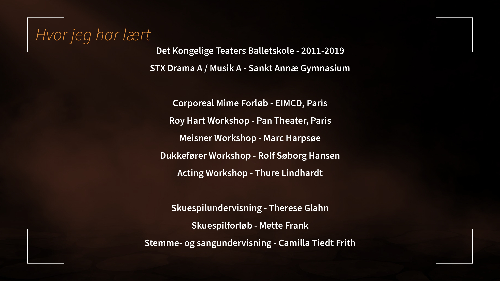

Om
Leopold af Rosenborg er en dansk skuespiller bosat i København.
Leopold har medvirket i mere end 40 produktioner inden for teater, film og tv samt reklamefilm og musikvideoer. Hans første erfaringer med scenekunsten går tilbage til barndommen, hvor han medvirkede i balletforestillinger på Det Kongelige Teater. Siden har han arbejdet med en bred vifte af teaterproduktioner og produktioner foran kameraet.
Leopold er medlem af Dansk Skuespillerforbund.

